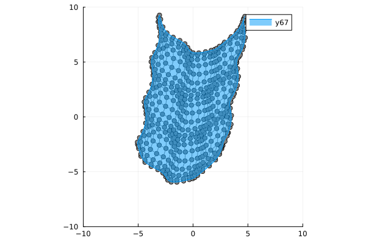

Fitting with B-spline manifold
Setup
using BasicBSpline
using BasicBSplineFitting
using StaticArrays
using PlotsFitting with least squares
fittingcontrolpoints function
p1 = 2
p2 = 2
k1 = KnotVector(-10:10)+p1*KnotVector([-10,10])
k2 = KnotVector(-10:10)+p2*KnotVector([-10,10])
P1 = BSplineSpace{p1}(k1)
P2 = BSplineSpace{p2}(k2)
f(u1, u2) = SVector(2u1 + sin(u1) + cos(u2) + u2 / 2, 3u2 + sin(u2) + sin(u1) / 2 + u1^2 / 6) / 5
a = fittingcontrolpoints(f, (P1, P2))
M = BSplineManifold(a, (P1, P2))
gr()
plot(M; xlims=(-10,10), ylims=(-10,10), aspectratio=1)
Try on Desmos graphing graphing calculator! 
Cardioid (planar curve)
f(t) = SVector((1+cos(t))*cos(t),(1+cos(t))*sin(t))
p = 3
k = KnotVector(range(0,2π,15)) + p * KnotVector([0,2π]) + 2 * KnotVector([π])
P = BSplineSpace{p}(k)
a = fittingcontrolpoints(f, P)
M = BSplineManifold(a, P)
gr()
plot(M; aspectratio=1)Helix (spatial curve)
f(t) = SVector(cos(t),sin(t),t)
p = 3
k = KnotVector(range(0,6π,15)) + p * KnotVector([0,6π])
P = BSplineSpace{p}(k)
a = fittingcontrolpoints(f, P)
M = BSplineManifold(a, P)
plotly()
plot(M)